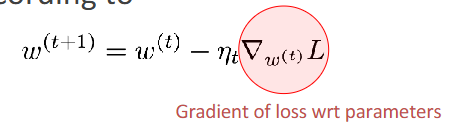

作者：南方的狮子先生
标签：深度学习 / 反向传播 / PyTorch / 零基础 / 可视化
目标：让只懂加减乘除的你也能秒懂“反向传播”！
前三节课我们学会了：
但问题是——怎么快速算出每个旋钮该往哪边拧、拧多少？
如果网络有 10 层、每层 1000 个旋钮，手动算梯度岂不是要算到秃头？
于是，反向传播（Backpropagation） 应运而生：
一种用“链式法则”把梯度像快递一样层层退回的算法。
想象一条流水线：
原料（输入 x）→ 工人 1（层 1）→ 工人 2（层 2）→ … → 质检（损失 L）
现在质检发现：“最后成品误差 10 分！”
老板希望每个工人都知道“自己该负多少责任”，好调整操作手册（权重 w）。
反向传播就像写“退货单”：

这个公式是梯度下降算法的核心公式，用于更新模型的参数 ( w )。它是深度学习中优化模型的关键步骤之一。现在我们来详细介绍公式中的每个参数：
def sgd(params, lr, batch_size): #@save
"""小批量随机梯度下降"""
with torch.no_grad():
for param in params:
param -= lr * param.grad / batch_size(这个地方具体是怎么操作的就很明显了)
param.grad.zero_()
别怕，只看“形状”即可：
对于第 l 层，想求损失对权重 w^l 的梯度：
$$ \frac{\partial L}{\partial w^l} = \underbrace{\left( \frac{\partial a^l}{\partial w^l} \right)^T}{\text{本地 Jacobian}} \cdot \underbrace{\frac{\partial L}{\partial a^l}}{\text{从上层退回来的梯度}} $$
白话：
于是整个算法分三步：
| 步骤 | 方向 | 做的事 |
|---|---|---|
| ① 前向 | 从输入→输出 | 把每层输出 a^l 存起来，准备“退货”用 |
| ② 反向 | 从输出→输入 | 按上面公式把梯度一步步退回 |
| ③ 更新 | 原地 | 用退回来的梯度，按 w = w – lr * 梯度 拧旋钮 |
（这里放不了动图，推荐两个在线玩具，打开就能玩）
理论看完，直接上手：
import torch
# 1. 定义两个可训练参数
w = torch.tensor(2.0, requires_grad=True) # 权重
b = torch.tensor(-1.0, requires_grad=True) # 偏置
# 2. 前向：y = wx + b
x = torch.tensor(3.0)
y_pred = w * x + b
loss = (y_pred - 10)**2 # 假设目标值是 10
# 3. 反向：自动链式法则
loss.backward()
print(w.grad) # tensor(6.) ← 告诉你要减小 w
print(b.grad) # tensor(2.) ← 告诉你要增大 b
解释：
.backward() 就是“自动写退货单”的魔法函数。
PyTorch 在后台帮你把链式法则一路拆到最底层，无需手写。
| 问题 | 一句话答案 |
|---|---|
| 梯度消失？ | 链式乘太多小于 1 的数，梯度趋 0 → 用 ReLU、残差、BatchNorm |
| 梯度爆炸？ | 链式乘太多大于 1 的数，梯度爆表 → 梯度裁剪、权重初始化 |
| 反向传播 vs 梯度下降？ | 前者是“算梯度”，后者是“用梯度更新”；一个算法，一个策略 |
| 必须可导？ | 对，所以激活函数用 ReLU/Sigmoid，不用阶跃函数 |
“前向存结果，反向链式传；本地 Jacobian，乘以上层梯；一步降学习，万卷梯度平。”
第 5 讲我们将用 PyTorch 搭一个 3 层 MLP，在 MNIST 手写数字 上跑一遍完整训练循环：
DataLoader → Model → Loss → Optimizer → 训练/验证/测试
把今天学的反向传播真正用起来！
如果本文对你有帮助，记得点赞 + 收藏 + 关注，评论区打卡“我懂反向传播了！”